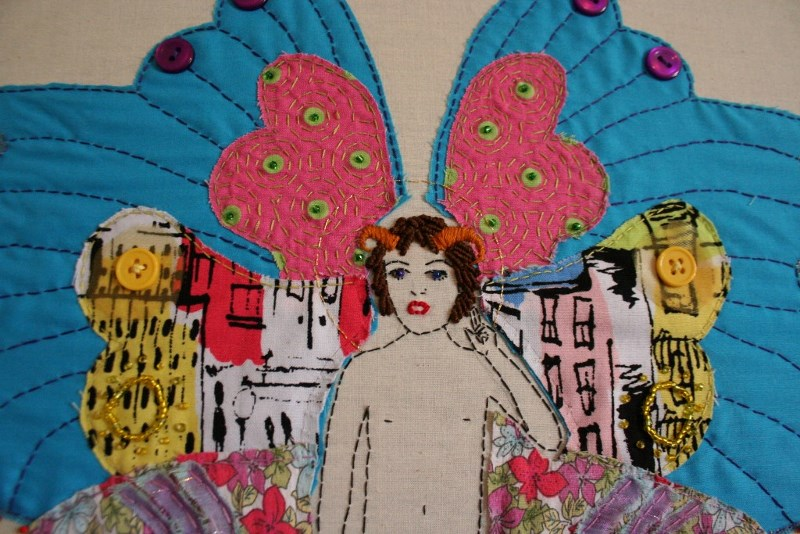
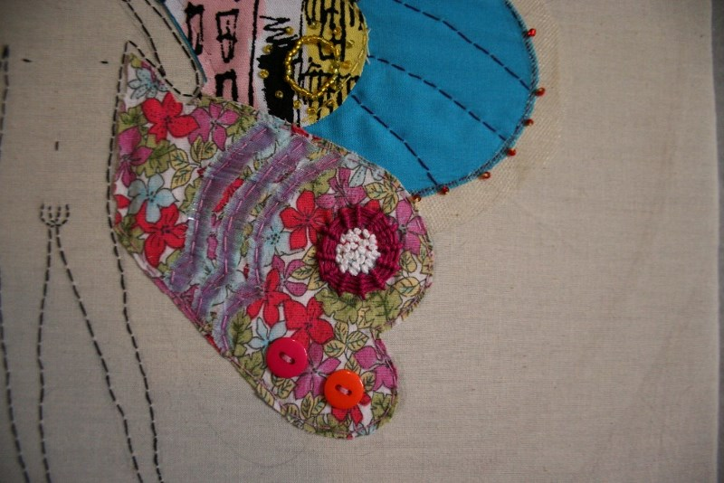
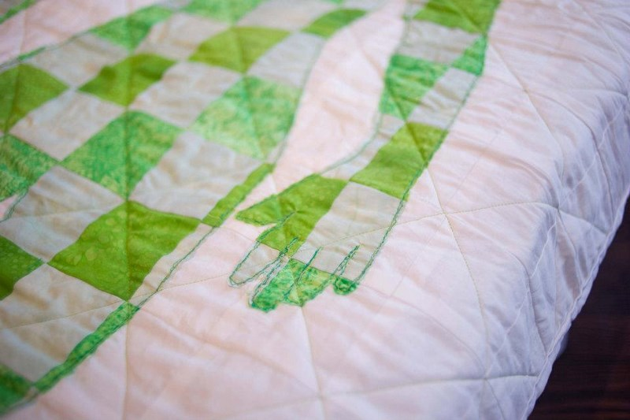
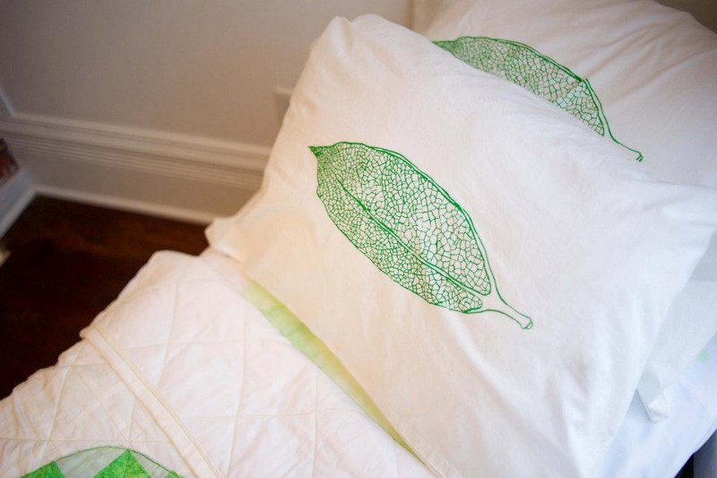

Jesi Evans
Fiber Artist
Archive
-

Henry Darger Tribute
2011
~ photo credit to Sarah Katherine Davis Photography -

Sooner or Later You'll Have to go to Sleep
2011
~ photo credit to Sarah Katherine Davis Photography -

Daisy
-

Icosahedron Study
-

Bee Study
-

Circles Study
-

Scarlet Letter Study
-

Argyle Study
-

Night Sky Study
Embroidery Studies
Henry Darger Tribute - 2011
~ photo credit to Sarah Katherine Davis Photography
Darger Detail #1 ›
Darger Detail #2 ›
Sooner or Later You'll Have to go to Sleep - 2011
~ photo credit to Sarah Katherine Davis Photography
Sooner or Later Detail #1 ›
 ~ photo credit to Sarah Katherine Davis PhotographySooner or Later Detail #2 ›
 ~ photo credit to Sarah Katherine Davis PhotographySooner or Later - Artist Statement
I chose the 1955 version of “Invasion of the Body Snatchers” directed by Don Siegel. Though the film has many points of interest the aspect of change within sleep is what captivates me the most. The act of sleep is what I focused on for the piece which is represented by the handmade bedding. In the film the characters were terrified of sleep because with sleep would come change. However, I didn’t dwell on the negative or frightening aspect of change. Instead, the change reflected in the piece is more positive or commonplace.
Rather than the ominous, “Sooner or later, you’ll have to go to sleep.” spoken in the film, the title is meant to be matter of fact. Sleep is a necessary act and is as unavoidable as change. The seed pods on the pillow cases are iconic images from the film but are also representative of new life or new ideas. As the old ‘you’ melts away, represented by the sheet painting, the new ‘you’ is created and put together piece by piece, represented by the quilt. The aspect of waking up new refreshed and rejuvenated, is incredibly appealing to me.